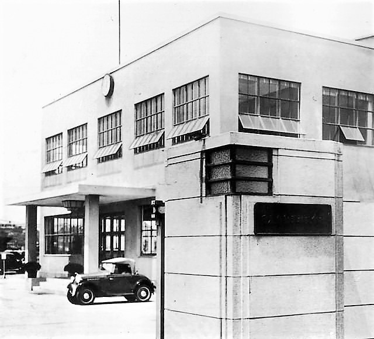
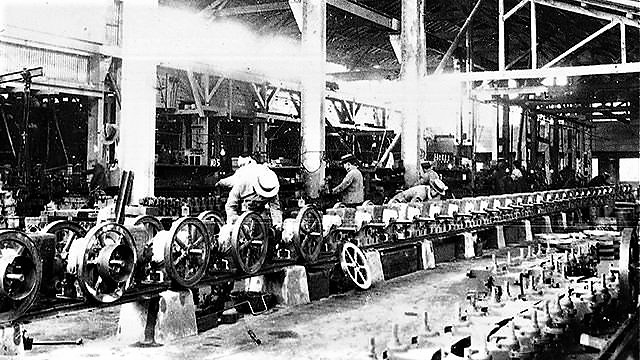
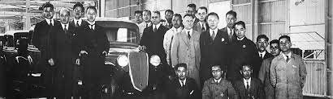

Yoshisuke-Aikawa was born in Yamaguchi.

He graduated in 1903 from Imperial University of Tokyo and then became a mechanic of Shibaura Seisaku-sho (Shibaura Engineering Works). He became a mechanic with a daily wage of 48 sen under the condition that his noble birth would remain hidden. Yoshisuke was disgusted by the fact that a businessmen was flocking around a politician trying to please him to extract favors, which made him never want to work in the business world. He then moved to the US and worked for a malleable cast iron factory (the Gould Coupler Company) as a laborer for more than a year. While being a worker at a cast iron factory, he realized that being able to make malleable cast iron was cheap and could be shaped into complex forms, was something Japanese industry needed. He moved back to Japan in 1906 and brought this knowledge with him. He then began making malleable joints for cars using the knowledge he had gained while working in the U.S.


At this plant, they were able to reach up to 10,227 units. Which made Nissan the largest car producer in Asian countries. Aikawa was selected to be a member of the Japanese House of Peer. Eventually his hopes of never going into to politics became a reality. He served in many important roles and positions, including a chairman of the National Small Business Association (SMB Association), a top advisor on the economy to the Kishi Cabinet, a member of the Industrial Planning Council, and honorary president of Toyo University. He eventually passed away in 1967 at the age of 86. Throughout his life, he was able to labor on the front lines of production sites and worked hard to aquire his technical skills.
